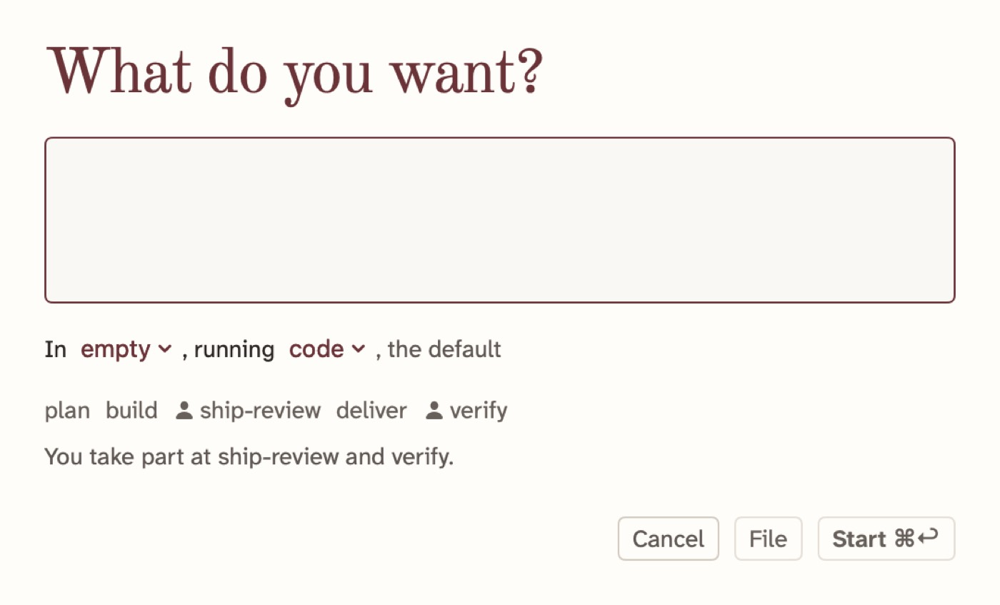
Empty repository, no request: Start is off. "the default" because nothing sets graph:.

After graph: feature in the repository's config.

Loopflow Dark.

A default the catalog does not have: the name, no step line.
Task 923677, branch at 44ed5db269 plus this run's fix. The app is the branch's Loopflow for Mac in an isolated bundle
(~/Applications/Loopflow Dev QA.app, its own bundle ID), reading a private Machine
(LF_HOME=/tmp/lfq923/lf, the branch's lf server run, a stand-in claude) with three
disposable paths: an empty repository, a repository with filed Tasks, and a directory that is not a repository.
The screen was locked for the whole run. Windows were captured from the app's own rendering
(cacheDisplay) and driven through lf desktop and a capture loop added to
LoopflowApp.swift for this run only (typing into the sheet, ⌘↩, Esc, a click at a point); that loop is
reverted and not committed. Nothing touched the installed app, its server or ~/.lf.
| Scenario | Result |
|---|---|
| ⌘N: the sheet, empty and with a request, Light and Dark | Matches the prototype's parts and wording. Start is off until there is a request. |
| The sheet follows the repository's default workflow | code, "the default" → after graph: feature: feature, "demo's default", the step line and sentence change with it. |
| A filed Task that has not started, Light and Dark | Bar draws the step line; pane reads "Not started. It will run feature, demo's default. You take part at explore, ship-review and verify." with Start and Start with… |
| Start from that pane | The Task starts; the bar becomes the same line with explore current and "Waiting for you at explore." |
| A path that is not a repository, Light and Dark | "This repository did not open", the Machine's message in mono, Retry. After git init there, Retry opens it. |
| Dashboard tile of an unstarted Task | One line. Fixed in this run (below). |
| Diff tab with no pull request; Graph log with no run; Files with no selection | "No pull request yet. Changes below are local.", "No Graph has run.", "Select a file". |
lf graph list --json, code's workflow | plan, build, ship-review, deliver, verify; "sentence": "You take part at ship-review and verify." |
The tile's header names the Task, and the one-line state under it repeated the title beside Start. The line now
reads "Not started" (TaskStartOffer, TaskWorkView.swift); unstartedTaskOffersStart
covers it and docs/surfaces.md says it.
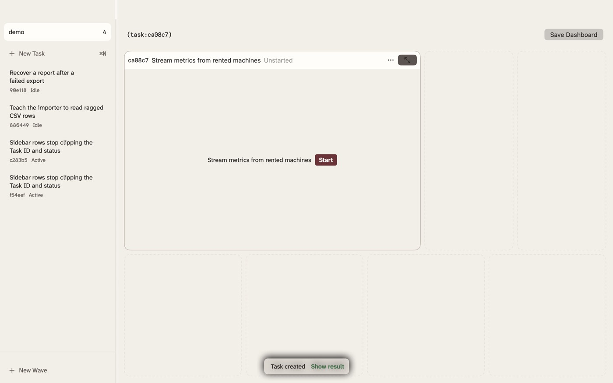
Before.
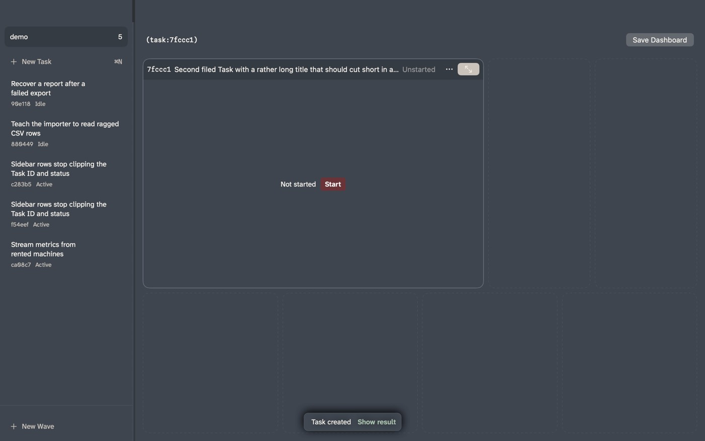
After, in Loopflow Dark, with a title long enough to cut short in the header.
scripts/test_desktop.sh --filter 'unstartedTaskOffersStart|EmptyStateTests' ✔ Test run with 7 tests in 2 suites passed
The plan's demo step 2 says an empty repository reads "No planned Work in this repository" with "New Task ⌘N" and
"Open the repository conversation". Opening one shows the repository's two panes instead: "Conversation not open" on
the left and the backlog's own empty, "Nothing is waiting in this repository" in bold with an accent button reading
"New". NoPlannedWork is drawn only by WorkSurfaceView and RoadmapView when the
plan has no Waves and no Tasks, and a repository window with no selection shows BacklogView first.
The backlog's empty (BacklogView.emptyState) predates this change and was not on its list: it is neither
a ContentUnavailableView nor one of the listed sentences. Not changed here: putting the prototype's serif
state in the backlog pane would set two serif titles side by side, and choosing between them is a design call.
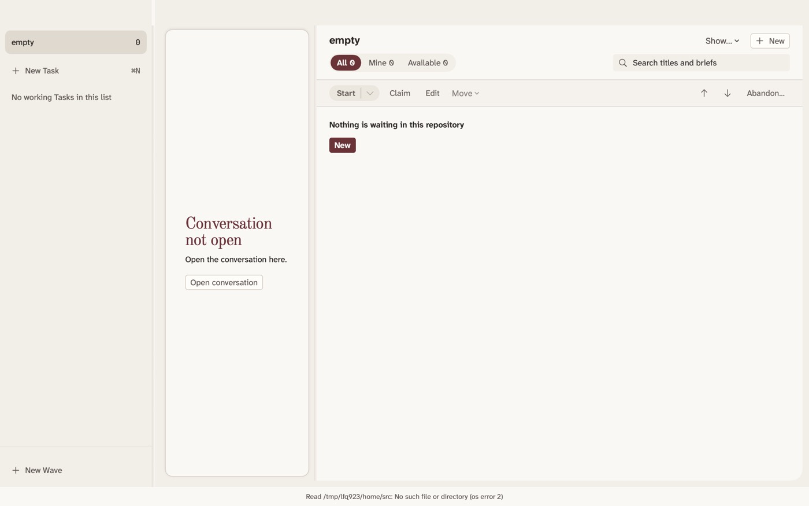
An empty repository, Loopflow Light.
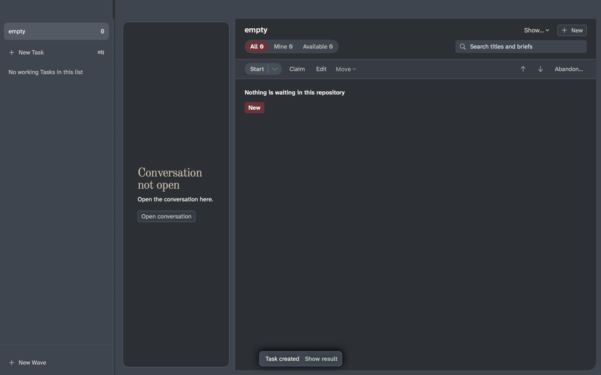
Loopflow Dark. (The "Task created" notice is left from the other repository's recovery.)
Typography.lede is Atkinson 600 at 17, and DESIGN.md lists "the text you type in New Task"
under it. The prototype's textarea is font: 400 var(--lede), and so is the request in its failed-start
state. The two references disagree; the app follows DESIGN.md. A paragraph typed in semibold reads heavy.
Title "Conversation not open", sentence "Open the conversation here.", button "Open conversation". In the narrow repository pane the title wraps to two lines. The sentence adds nothing the button does not say.
The pane's state and the Task page beside it both set the Task's name in the serif title step, in two inks.
DESIGN.md asks for one serif thing per screen. The page's title predates this change.
Two ways of breaking Start both went to creation recovery, which closes the sheet and reports in a notice at the
bottom of the window; the request's words are not kept on screen. Making .git unwritable gave
"Creation 3E68…: invalid data: Permission denied (os error 13); inspect the affected work before retrying. It may have
happened; refresh before retrying." and recovery later filed the Task. A repository default naming a missing workflow
filed the Task and gave "Creation 15C5…: repository default graph "nosuch" is unavailable: add
.lf/graphs/nosuch.yaml…", cut off at the window's edge. Both are the recovery path from before this change, not
StartingTaskView. Its "Not started.", "Try again" and "Discard" were not seen in the app.
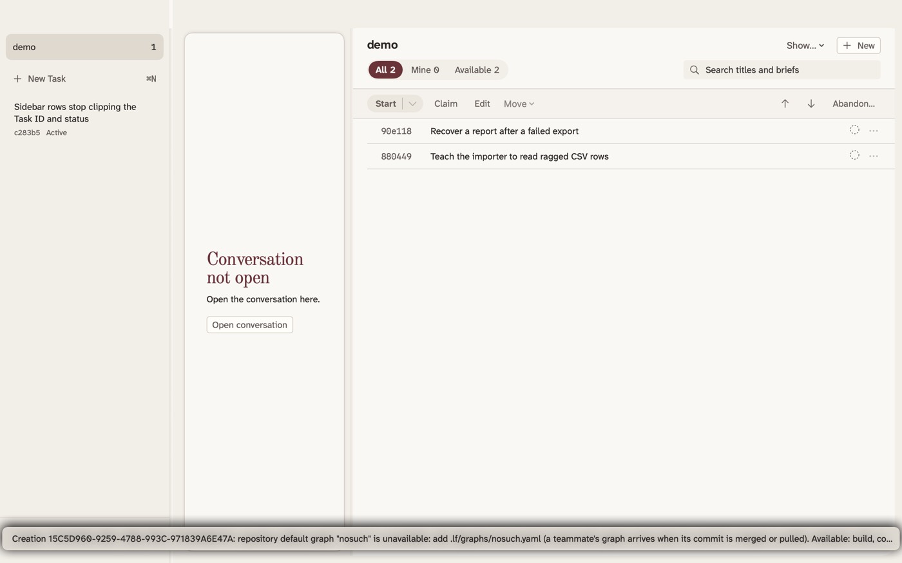
Start with a repository default that does not exist: the Task is filed and Active, the notice carries a request UUID and is cut short.
NewTaskTests taps a menu item headless.The two prototype sections are still in design/prototypes/desktop-more.html: items 1 and 2 are
differences from them that someone should settle before they go.
lf desktop do new-task (⌘N's action), then a request typed into the field.

Empty repository, no request: Start is off. "the default" because nothing sets graph:.
After graph: feature in the repository's config.
Loopflow Dark.
A default the catalog does not have: the name, no step line.
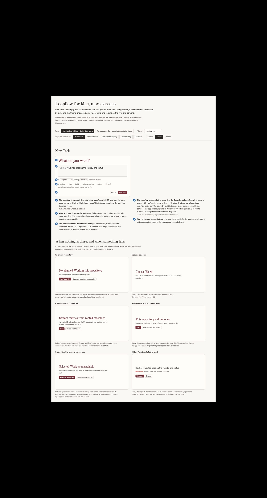
The prototype, rendered headless from design/prototypes/desktop-more.html.
lf task create 'Stream metrics from rented machines', then lf desktop view task:ca08c7 and
lf desktop enter. A loopflow://…/task/<id> link opens the Task's conversation, which
places it, so the link is not a way to see this state.

Loopflow Light.

Loopflow Dark, a long title.
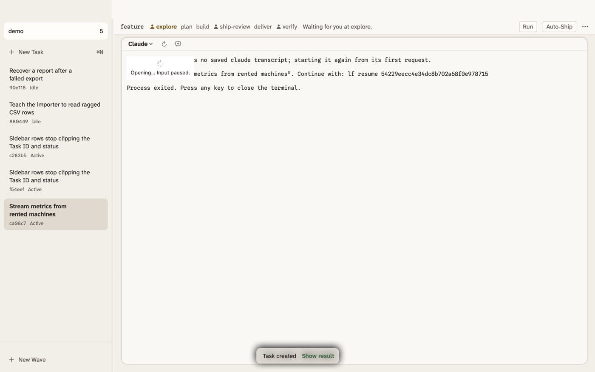
After Start in the pane: explore is current, "Waiting for you at explore." The terminal text is the stand-in provider exiting.

--repo /tmp/lfq923/notrepo, Loopflow Light.
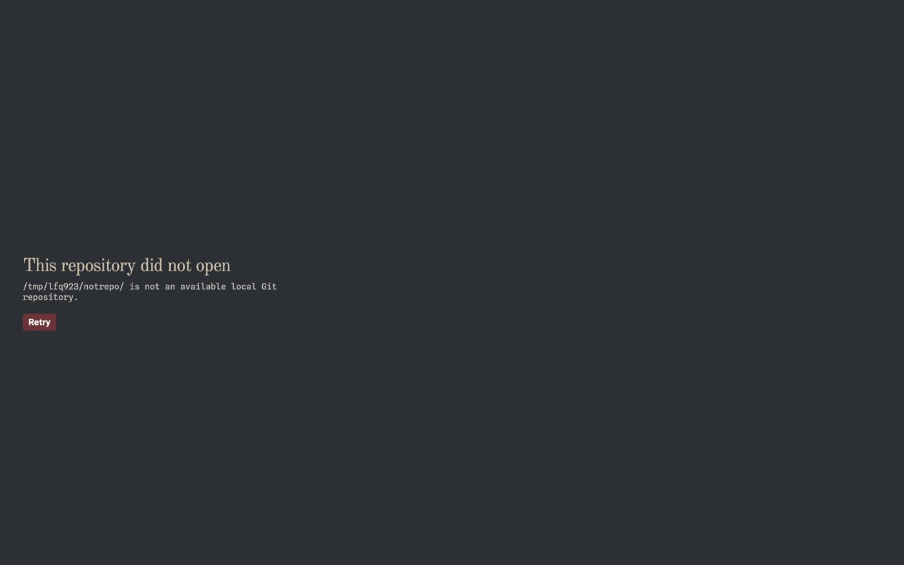
Loopflow Dark.
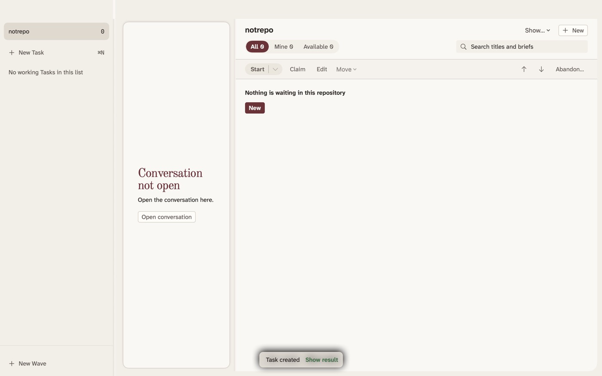
After git init in that directory and Retry.

Diff: "No pull request yet. Changes below are local."
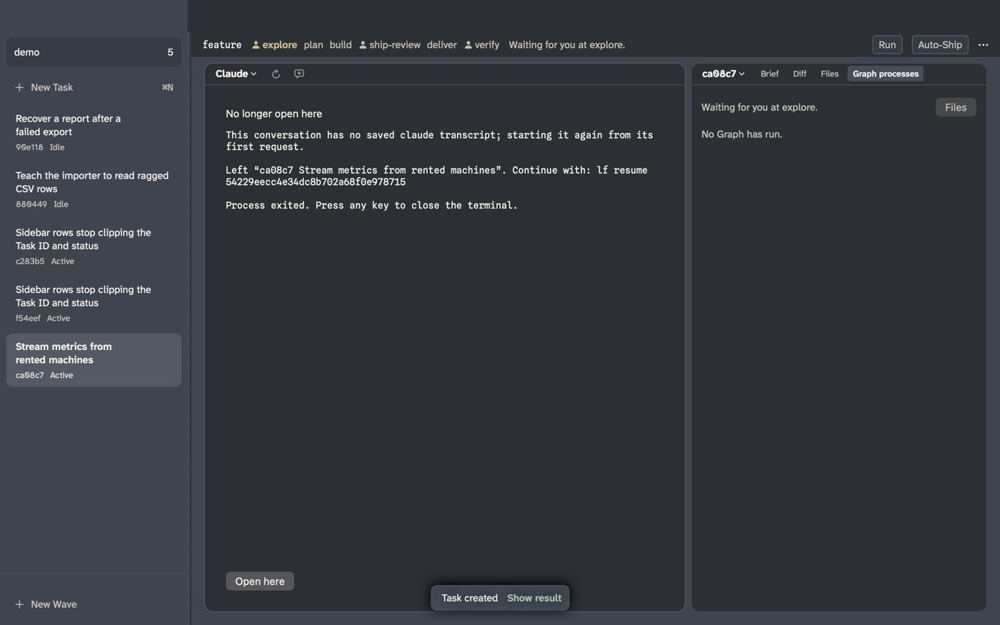
Graph processes: "No Graph has run."
The private server is stopped and no holder or provider from /tmp/lfq923 is running. The QA bundle is
deleted, unregistered from LaunchServices, and its defaults removed. /tmp/lfq923 itself (repositories,
store, full-size captures) is still on disk.